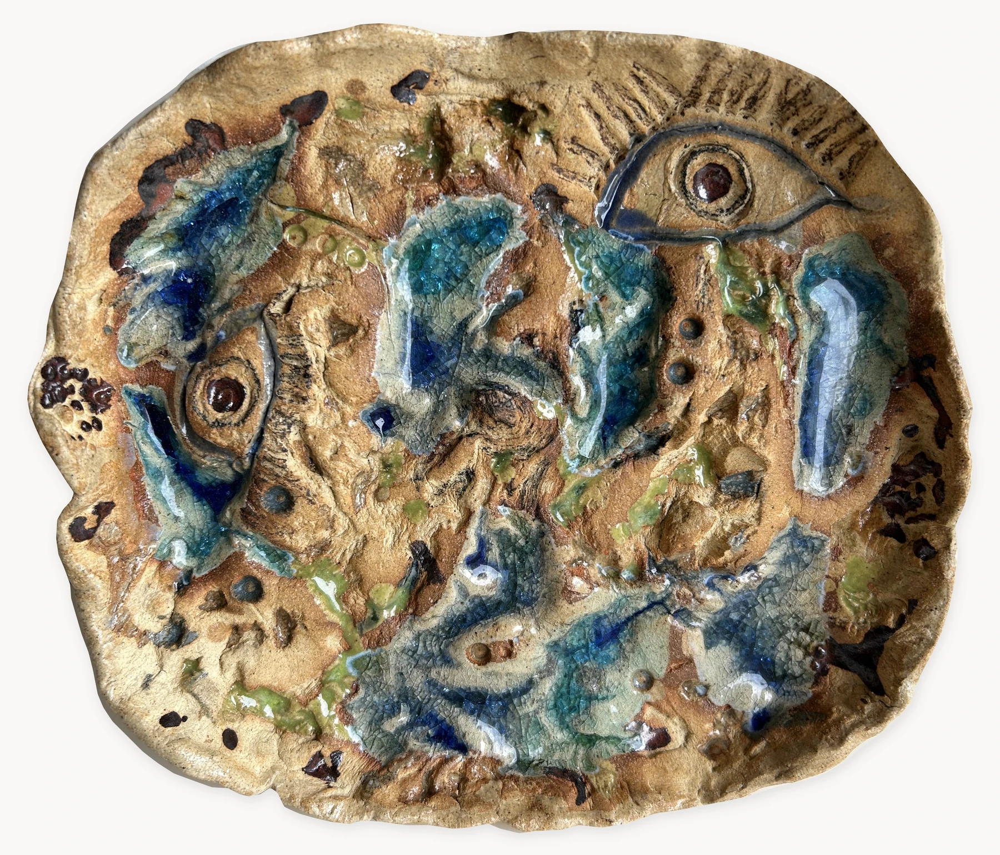
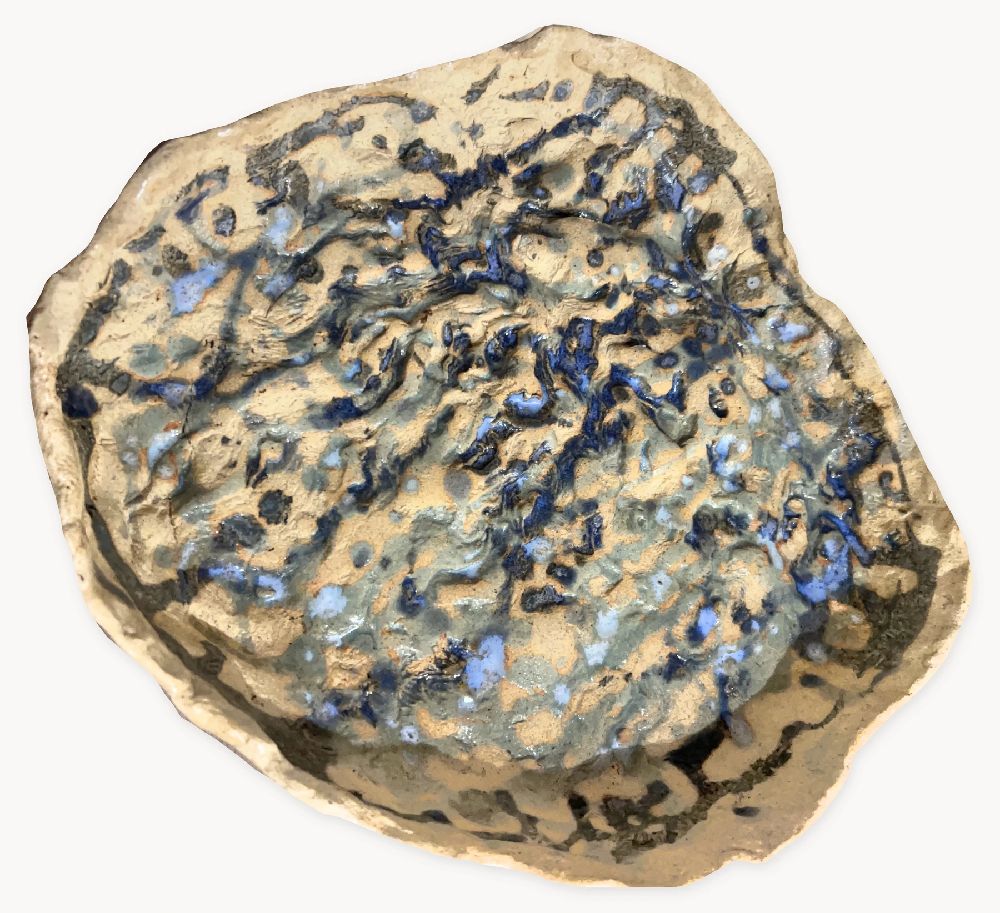
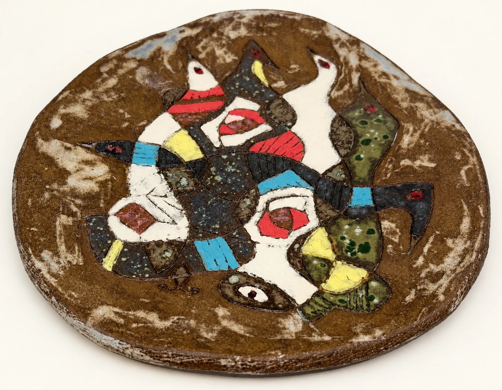
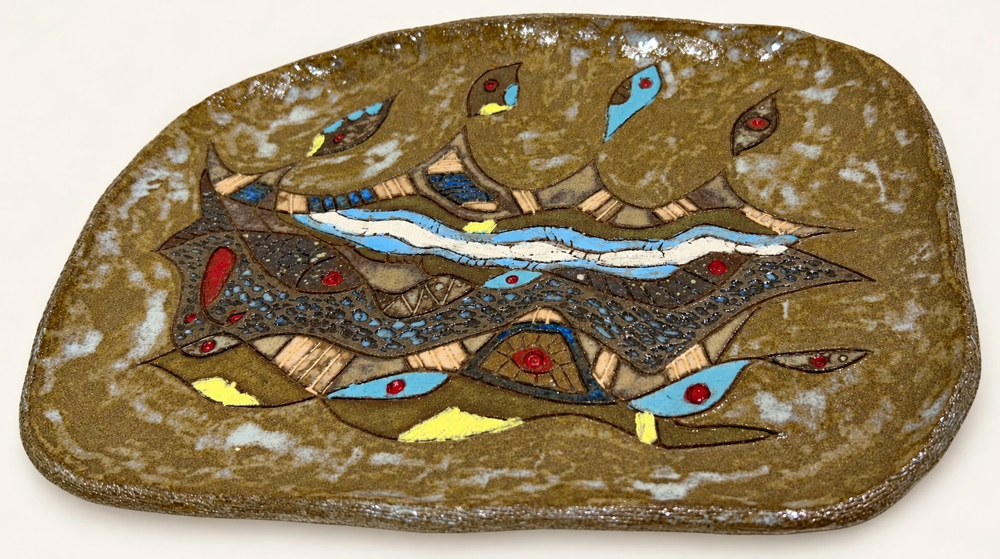
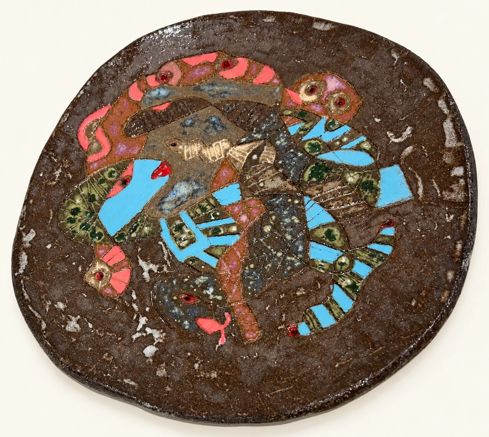
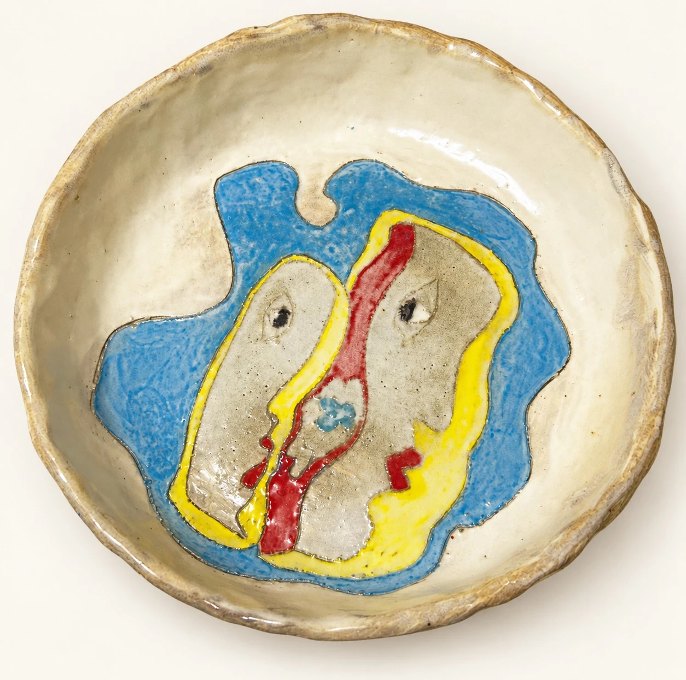
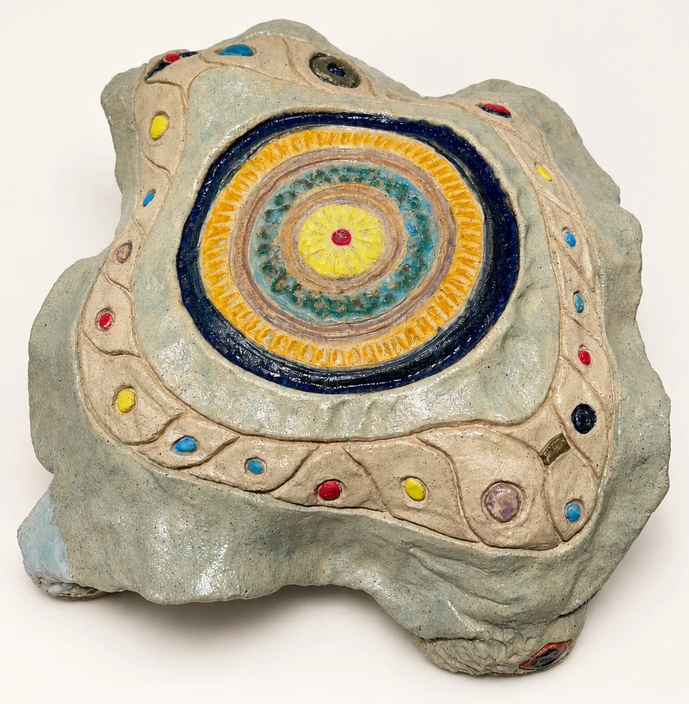
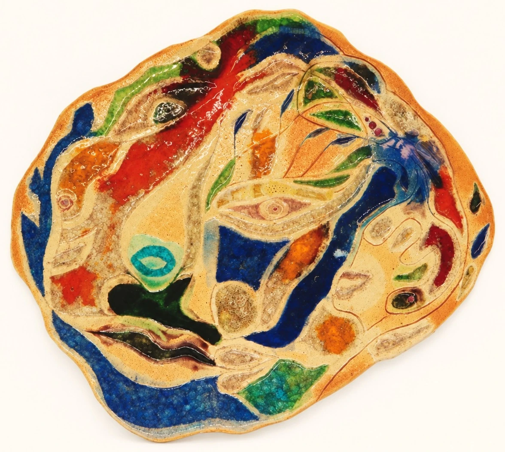
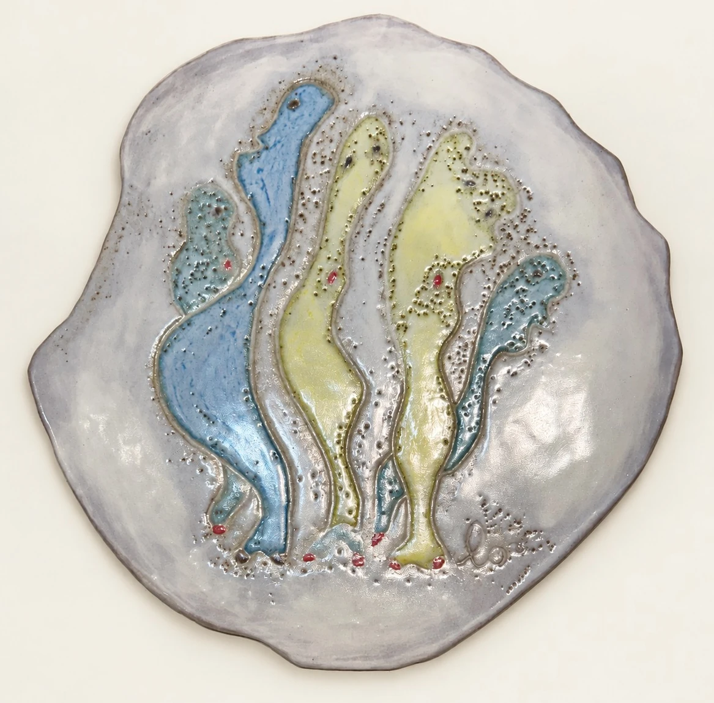

作品觀看 Work View
凝視的地景 Landscapes of the Gaze
刻線、釉色與陶土的起伏交織成觀看的場域，眼睛與生命符號在表面聚集，形成一片可以被凝視、也向觀者回望的地景。 Incised line, glaze, and the rise and fall of clay weave a field of seeing. Eyes and signs of life gather on the surface, forming a landscape that can be gazed at — and that gazes back.
被視之域—地景 Field of Being Seen - Landscape

被視之域—海景 Field of Being Seen - Seascape

被渡之形 Ferried Form

被視之流 Current of Being Seen

環形之內的眾影 Many Shadows Within the Ring

被視之間 Between Gazes

凝視的核心 Core of the Gaze

芳華再現 Bloom Reborn

凝視與盼望 Gaze and Hope

這一批把線條直接做在陶土上。石頭與樹皮上的紋路先被看見、再被畫下、最後在土上重生——《被視之間》是這條路徑唯一留下完整三段材料的一件。它們薄、平、掛在牆上，而表面上聚滿了眼睛。 This group puts line directly into clay. Markings on stone and bark are first seen, then drawn, and finally reborn in earth — Between Gazes is the one work for which all three stages survive. They are thin, flat, hung on the wall, and their surfaces are crowded with eyes.